AUDIO AND VISUAL SYSTEM (w/ Multi-display) > SYSTEM DESCRIPTION |
| DISC PLAYER OUTLINE |
A disc player uses a laser pickup to read digital signals recorded on discs. By converting the digital signals to analog, music and other content can be played.
Usable discs
Disc player
This player can only play audio CDs, CD-Rs (CD-Recordable), CD-RWs (CD-Rewritable), DVD videos, audio DVDs, and video CDs that have any of the following marks:
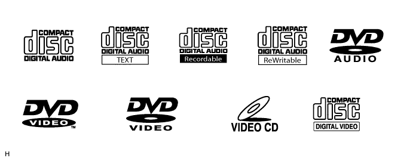
Precautions for handing disc
Cleaning
 |
To clean dirty discs, use a dry, soft cloth such as those used for glasses with plastic lenses.
Lightly wipe radially from the center of the disc.
| MP3/WMA OUTLINE |
Playable MP3 file standards
| Compatible standard | MP3 (MPEG1 LAYER3, MPEG2 LSF LAYER3) |
| Compatible sampling frequency |
|
| Compatible bit rate |
|
| Compatible channel mode | Stereo, joint stereo, dual channel, monaural |
Playable WMA file standards
| Compatible standard | WMA Ver. 7, 8, and 9 |
| Compatible sampling frequency | 32, 44.1, 48 (kHz) |
| Compatible bit rate |
|
ID3 tag and WMA tag
Additional textual information called ID3 tags can be input to MP3 files. Information such as song titles and artist names can be stored.
Additional textual information called WMA tags can be input to WMA files. Information such as song titles and artist names can be stored.
Usable media
Only CD-ROMs, CD-Rs (CD-Recordable), and CD-RWs (CD-ReWritable) can be used to play MP3/WMA files.
Usable media format
Usable media format
| Disc format | CD-ROM Mode 1, CD-ROM XA Mode 2 Form1 |
| File format | ISO9660 Level 1 and Level 2 (Joliet, Romeo) |
Standards and restrictions
| Maximum directory levels | 8 levels |
| Maximum number of characters for a folder name/file name | 32 characters |
| Maximum number of folders | 192 (Including empty folders, root folders, and folders that do not contain MP3/WMA files) |
| Maximum number of files in a disc | 255 (Including non-MP3/WMA files) |
File names
Only files with an extension of ".mp3" or ".wma" can be recognized and played as MP3 or WMA files.
Save MP3 or WMA files with an extension of ".mp3" or ".wma".
| "BLUETOOTH" OUTLINE |
"Bluetooth" is a new wireless connection technology that uses the 2.4 GHz frequency band. This makes it possible to connect a cellular phone ("Bluetooth" capable phone*) to the multi-display ("Bluetooth" system is built-in), and use a handsfree function with the cellular phone in a pocket or bag. As a result, it is not necessary to use a connector for the cellular phone.

| TOUCH SCREEN OUTLINE |
Touch switch
Touch switches are touch-sensitive (interactive) switches operated by touching the screen. When a switch is pressed, the outer glass bends into contact the inner glass at the pressed position. By doing this, the voltage ratio is measured and the pressed position is detected.
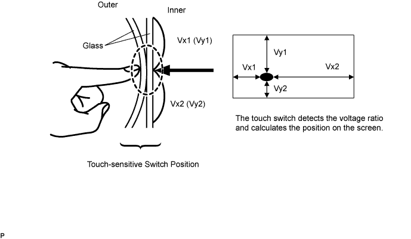
| AVC-LAN DESCRIPTION |
What is AVC-LAN?
AVC-LAN, an abbreviation for "Audio Visual Communication Local Area Network", is a united standard developed by the manufacturers in affiliation with Toyota Motor Corporation. This standard pertains to audio and visual signals as well as switch and communication signals.
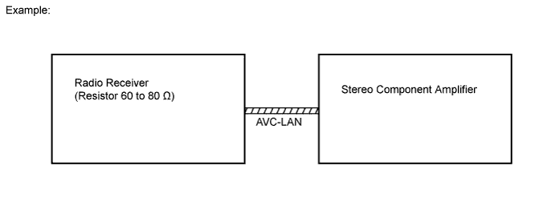
Purpose:
Recently, car audio systems have rapidly developed and the functions have vastly changed. The conventional car audio system is being integrated with multimedia interfaces similar to those in navigation systems. At the same time, customers are demanding higher quality from their audio systems. This is an overview of the standardization background. The specific purposes are as follows:
To solve sound problems, etc. caused by using components of different manufacturers through signal standardization.
To allow each manufacturer to concentrate on developing the products they do best. From this, reasonably priced products can be produced.
| COMMUNICATION SYSTEM OUTLINE |
Components of the audio system communicate with each other via the AVC-LAN.
The master component of the AVC-LAN is a radio receiver with a 60 to 80 Ω resistor. This is essential for communication.
If a short circuit or open circuit occurs in the AVC-LAN circuit, communication is interrupted and the audio system will stop functioning.
| DIAGNOSTIC FUNCTION OUTLINE |
The audio system has a diagnostic function. The result is indicated on the master unit.
A 3-digit hexadecimal component code (physical address) is allocated to each component on the AVC-LAN. Using this code, the component can be displayed in the diagnostic function.
| DIAGNOSIS DISPLAY DETAILED DESCRIPTION |
SYSTEM CHECK
System Check Mode Screen
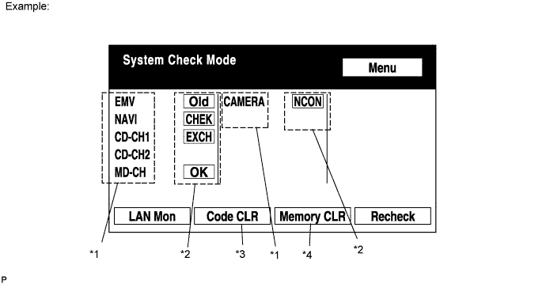
| Address No. | Name | Address No. | Name |
| 110 | EMV | 120 | AVX |
| 128 | 1DIN TV | 140 | AVN |
| 144 | G-BOOK | 178 | NAVI |
| 17C | MONET | 190 | AUDIO H/U |
| 1AC | CAMERA-C | 1B0 | Rr-TV |
| 1C0 | Rr-CONT | 19D | BT-HF |
| 1C4 | PANEL | 1C6 | G/W |
| 1C8 | FM-M-LCD | 1D8 | CONT-SW |
| 1EC | Body | 118 | EMVN |
| 1F1 | XM | 1F2 | SIRIUS |
| 230 | TV-TUNER | 240 | CD-CH2 |
| 250 | DVD-CH | 280 | CAMERA |
| 360 | CD-CH1 | 3A0 | MD-CH |
| 17D | TEL | 440 | DSP-AMP |
| 530 | ETC | 1F6 | RSE |
| 1A0 | DVD-P | 1D6 | CLOCK |
| 238 | DTV | 480 | AMP |
| Result | Meaning | Action |
| OK | Device did not respond with DTC (excluding communication DTCs from AVC-LAN). | - |
| EXCH | Device responds with "replace" type DTC. | Look up DTC in "Unit Check Mode" and replace device. |
| CHEK | Device responds with "check" type DTC. | Look up DTC in "Unit Check Mode". |
| NCON | Device was previously present, but does not respond in diagnostic mode. | - Check power supply wire harness of device - Check AVC-LAN of device. |
| Old | Device responds with "old" type DTC. | Look up DTC in "Unit Check Mode". |
| NRES | Device responds in diagnostic mode, but gives no DTC information. | - Check power supply wire harness of device. - Check AVC-LAN of device. |
Diagnosis MENU Screen
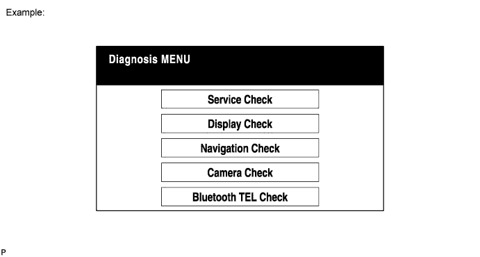
Unit Check Mode Screen
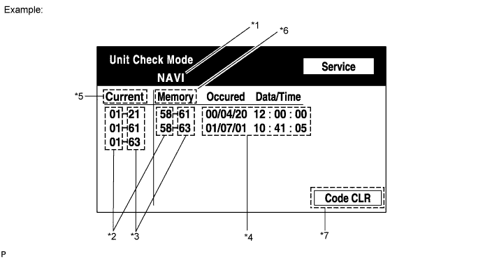
| Display | Contents |
| *1: Device name | Target device |
| *2: Segment | Target device logical address |
| *3: DTC | DTC (Diagnostic Trouble Code) |
| *4: Timestamp | Time and date of past DTCs are displayed (year is displayed in 2-digit format). |
| *5: Present Code | DTCs output at service check are displayed. |
| *6: Past Code | Diagnostic memory results and stored DTCs are displayed. |
| *7: Diagnosis Clear Switch | Pushing this switch for 3 seconds clears diagnostic memory data of target device (responses to diagnostic system check result and displayed data are cleared). |
LAN Monitor (Original) Screen
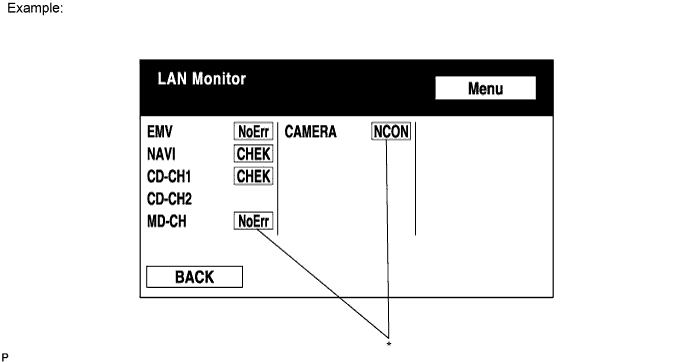
| Result | Meaning | Action |
| No Err (OK) | There are no communication DTCs. | - |
| CHEK | Device responds with "check" type DTC. | Look up DTC in "Unit Check Mode". |
| NCON | Device was previously present, but does not respond in diagnostic mode. |
|
| Old | Device responds with "old" type DTC. | Look up DTC in "Unit Check Mode". |
| NRES | Device responds in diagnostic mode, but gives no DTC information. |
|
LAN Monitor (Individual) Screen
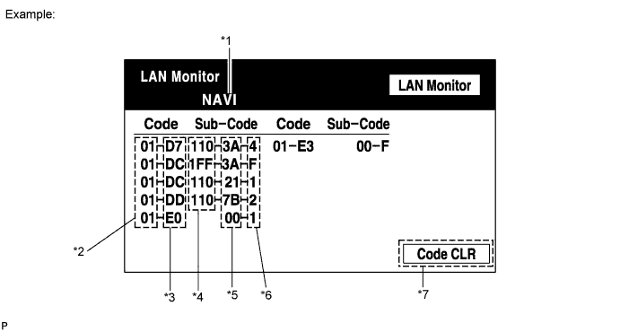
| Display | Contents |
| *1: Device name | Target device |
| *2: Segment | Target logical address |
| *3: DTC | DTC (Diagnostic Trouble Code) |
| *4: Sub-code (device address) | Physical address stored with DTC (if there is no address, nothing is displayed). |
| *5: Connection check No. | Connection check number stored with DTC |
| *6: DTC occurrence | Number of times same DTC has been stored |
| *7: Diagnosis Clear Switch | Pushing this switch for 3 seconds clears diagnostic memory data of target device (responses to diagnostic system check result and displayed data are cleared). |
DISPLAY CHECK
Vehicle Signal Check Mode Screen
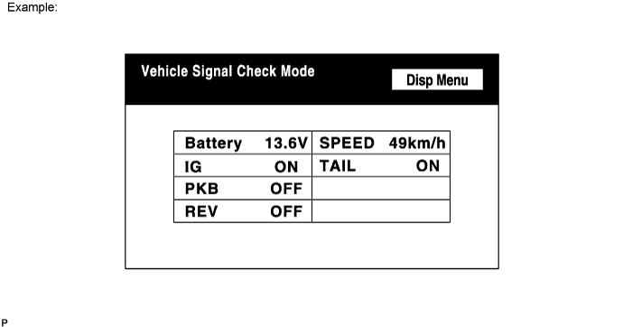
| Name | Contents |
| Battery | Battery voltage is displayed. |
| PKB | Parking brake ON/OFF state is displayed. |
| REV | Reverse signal ON/OFF state is displayed. |
| IG | Engine switch ON/OFF state is displayed. |
| TAIL | TAIL signal (Light control switch) ON/OFF state is displayed. |
| SPEED | Vehicle speed is displayed in km/h. |
NAVIGATION CHECK
Navigation Check Screen
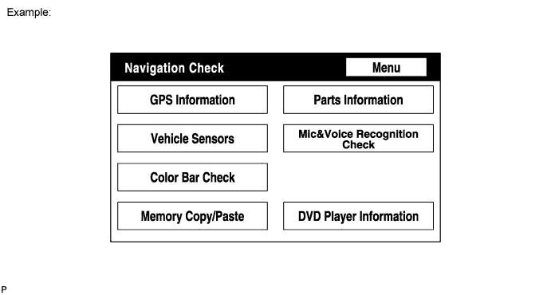
GPS Information Screen
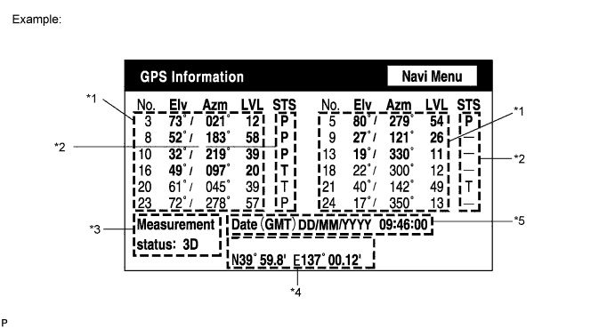
| Display | Contents |
| T | System is receiving GPS signal, but is not using it for location. |
| P | System is using GPS signal for location. |
| - | System cannot receive GPS signal. |
| Display | Contents |
| 01H | System cannot receive a GPS signal. |
| 02H | System is tracing a satellite. |
| 03H | System is receiving a GPS signal, but is not using it for location. |
| 04H | System is using the GPS signal for location. |
| Display | Contents |
| 2D | 2-dimensional location method is being used. |
| 3D | 3-dimensional location method is being used. |
| NG | Location data cannot be used. |
| Error | Reception error has occurred. |
| - | Any other state. |
| Display | Contents |
| Position | Latitude and longitude information on current position is displayed. |
| Display | Contents |
| Date | Date/time information obtained from GPS signal is displayed in Greenwich mean time (GMT). Last 4 digits are displayed. |
Vehicle Sensors Screen
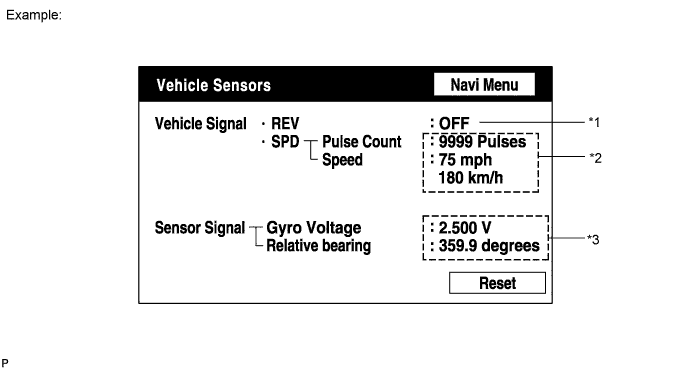
| Display | Contents |
| *1: REV | REV signal ON/OFF state is displayed. |
| *2: SPD | SPD signal condition is displayed. |
| Display | Contents |
| *3: Gyro sensor | Gyro sensor output condition is displayed (when vehicle is driven straight or is stationary, voltage is approximately 1.5 V). |
MICROPHONE & VOICE RECOGNITION CHECK Screen
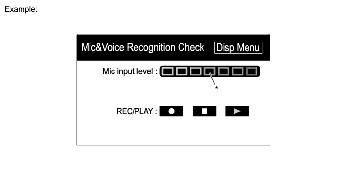
| Display | Contents |
| *: Microphone input level meter | Monitors the microphone input level every 100 ms and displays results in 8 different levels. |
DVD player information Screen
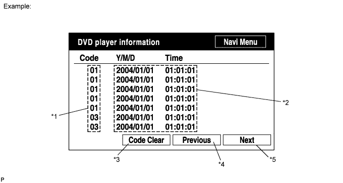
| Display | Contents |
| *1: Trouble code | Each code corresponding to malfunctions is displayed. For details, refer to "Trouble Code Description". |
| *2: Occurrence time |
|
| *3: Trouble code clear switch | All code data being displayed is cleared by pushing this switch for 3 seconds. |
| *4: Returning switch | Previous page is displayed. If current displayed page is first page, this switch cannot be operated. |
| *5: Proceeding switch | Next page is displayed. If current displayed page is last page, this switch cannot be operated. |
| Code | Malfunction | Countermeasure |
| 01 | Cannot be recognized | Replace navigation ECU. |
| 03 | Cannot be read | Follow inspection procedure for DTC 58-42 (Click here). |